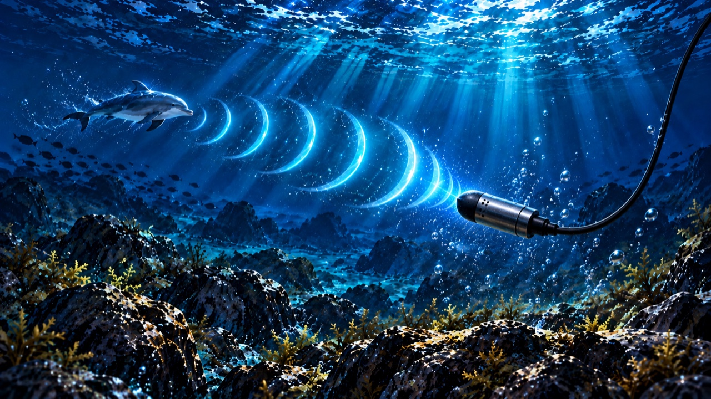
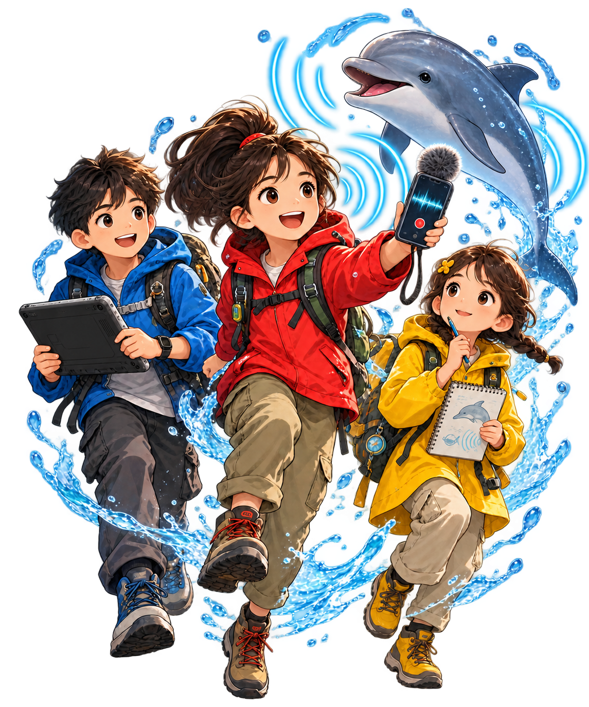

곰새코지 · 수중음향 분석실
사건 기록 03:00
수신된 문장
“돌려줘.”
미션 01 · 파형 추적
같은 휘슬, 세 마이크!
먼저 들은 곳부터 1·2·3을 적어 봐.
힌트: 세 곳의 녹음을 비교해 봐.

새벽 세 시,
바다에서 이상한 신호가 잡혔다.
제주 바닷가의 작은 마을 곰새코지. 어느 새벽, 물마루 AI 연구소의 화면에 낯선 문장이 떴다. 돌고래 소리를 분석한 AI가 인간의 말로 바꾼 신호였다.
“돌려줘.”
누가, 무엇을 돌려 달라는 걸까? 6학년 단우와 친구들은 수중 마이크 세 대의 녹음, 관광선의 움직임, 해녀들의 바다 경험을 하나씩 살핀다. 잘린 녹음 속 휘슬은 어디서 왔는지, AI가 붙인 라벨은 믿을 만한지 따라갈수록 새로운 의문이 생긴다.
그러던 중 카메라 앞에 돌고래가 불쑥 나타난다. 흩어진 소리와 기록을 이어 붙인 아이들은 사라진 목소리의 진실을 찾아낼 수 있을까?
바다와 AI를 함께 읽는 과학 모험 이야기
곰새코지 돌고래
목소리 사건

곰새코지 바다탐사대
나의 탐사대원증
이름
내가 맡을 임무를 골라 봐!
소리에 귀 기울이기
잘린 기록 찾아내기
바다의 단서 읽어내기
첫 번째 사건
“돌려줘.”라고 한 목소리의 주인을 찾아라!